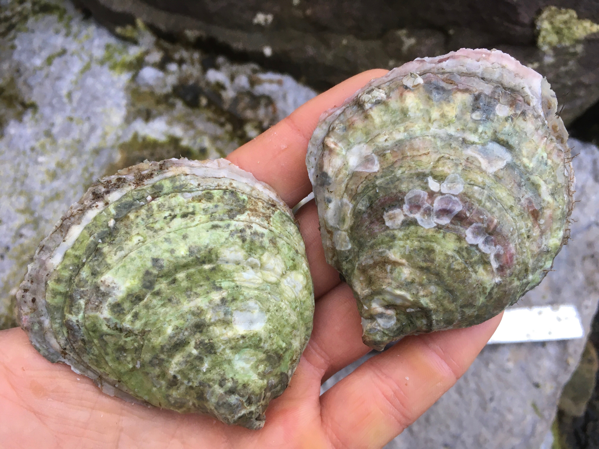

The Native Oyster
(Ostrea edulis)
Species Profile & History
A Native Oyster?
The European Flat Oyster (Ostrea edulis) is the indigenous oyster of Europe, and is often called the Native oyster. In France, Native oysters are known as huîtres plates (flat oysters) except for those that come from the Belon River estuary in Brittany, France, which are known as 'Belons'.
A full overview of the species can be found here, but in brief:
“The native oyster Ostrea edulis has an oval or pear-shaped shell with a rough, scaly surface. The two halves (valves) of the shell are different shapes. The left valve is concave and fixed to the substratum, the right being flat and sitting inside the left. The shell is off-white, yellowish or cream in colour with light brown or bluish concentric bands on the right valve. Ostrea edulis grows up to 11 cm long, rarely larger. The inner surfaces are pearly, white or bluish-grey, often with darker blue areas.”

Due to its unique taste, the Native oyster is commonly known as the oyster connoisseur’s oyster of choice, and we would have to agree. Not that there is anything wrong with a good Rock oyster, but for a pure taste of what an oyster is about, for us, it has to be a Native.
A History of Decline
The history of the Native oyster is fascinating and makes for depressing reading. As a species it has suffered a massive decline and we are lucky it is still with us; as one might expect the hand of man has played a huge part, if not the key part, in this decline.
Records show that Ostrea edulis has been gathered and consumed by humans since the Mesolithic, and they are commonly found in large quantities by archaeologists in shell middens. This document produced by Heriot-Watt University for the DEEP project provides a fascinating discussion of the Native oyster in the Dornoch Firth on the east coast of the Highlands, and only a “stone's throw” from our farm site.
However, over time the growth of the human population has resulted in overfishing, physical damage to benthic habitats, pollution and eutrophication, see this document for further details. In particular, it would appear that a serious decline in species numbers coincided with arrival of the industrial revolution; the introduction of industrial trawling and railway systems, coupled with increased urban demand, seems to have be the key driver behind population decline across the European Atlantic coast.
One of the best, or should that be worst, examples is right here in Scotland. The Firth of Forth, at one time, contained a Native oyster bed said to measure 10 x 30km, and able to produce, at its height over 30 million oysters per year, but this was not to last, here is an extract from an excellent paper:
“Prior to the early 19th century the Firth of Forth contained rich, extensive biogenic habitat dominated by oysters (Fulton 1896 and references therein; Royal Commission 1885). These sustained a hugely productive fishery and consolidated large areas of seabed with diverse, three-dimensionally complex habitat. By the late 19th century oysters were still present but in much reduced abundance, most likely as a consequence of intense overexploitation and the collateral damage done by bottom trawlers and dredgers as they penetrated areas of the Forth for the first time (Fulton 1896). By the first half of the 20th century Firth of Forth oysters had declined to the point of extirpation (Millar 1961). Sustained, intensive exploitation undoubtedly played a large role in their decline.”
Disease
By the 20th Century the oyster industry in much of Europe was in serious decline and the majority of natural beds of Native oyster have never recovered. The French industry did recover however, and thrived until the 1960s when large scale mortalities, – over 90%, were recorded in Ostrea edulis in Aber Wrac'h in Brittany. The parasite Marteilia refringens was diagnosed in dying oysters, and within three to four years most of the oyster growing regions within Brittany were infected with this parasite.
In addition, in 1979 Bonamia ostreae was detected in Native oyster populations in France, Spain and Denmark. The parasite can cause over 90% mortality among oysters, when initially introduced into a naïve population. Bonamia has continued to spread throughout Europe and further damage the populations of Ostrea edulis, with knock on impacts for any associated fishing or farming activities.
As a result of overexploitation and disease the production of the Native oyster constituted less than 0.2 percent of the total global production of all farmed oyster species in 2002. The bulk of production (97.7 percent) came from the rearing of the Pacific cupped oyster, Crassostrea gigas.
Restoration
Within Scotland the Native oyster is now listed as a Priority Marine Feature considered to be of conservation importance in Scotland's seas. This has been replicated throughout Europe and there has been much recent debate about trying to restore Ostrea edulis beds across the continent. This has led to the foundation of the Native Oyster Restoration Alliance (NORA). The alliance is a European network aiming at reinforcement and restoration of the Native oyster. Network members are representatives of governmental agencies, science, non-governmental organizations, as well as oyster growers and other private enterprises.
One of the key restoration projects is DEEP mentioned above. The aim of this project is to restore Native European oysters to the Dornoch Firth. It has been pioneered by Glenmorangie in partnership with Heriot-Watt University and the Marine Conservation Society. Here is short clip detailing what they aim to achieve:
Our Role
And what of us? Well we are incredibly lucky to have a farm situated in such a pristine location, a rare occurrence in Europe today. As such, we have been able to experiment with growing Native oysters on site and we have successfully managed to grow our trial stock to commercial size in our chosen equipment. Further to that these oysters are clean and healthy and our site and stock free of both the diseases that have caused so much damage to the wild populations of the Native oyster.
This means we are well placed to help supply stock for the many restoration projects that are starting. We also aim to bring back the Native oyster as a food product. Working on both of these means we can play our part ensuring that this beautiful little creature has a future and is not lost forever.